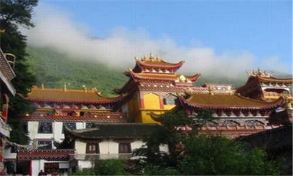
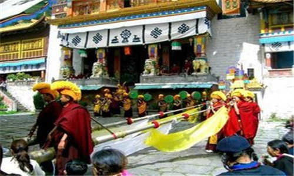
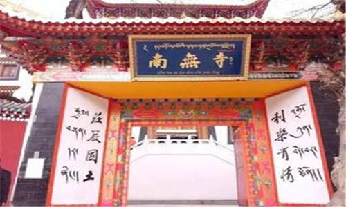
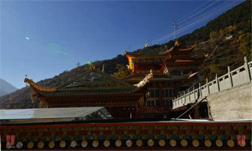
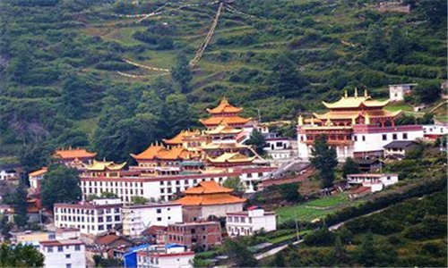
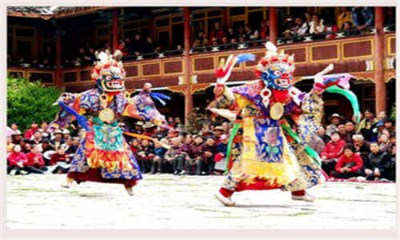

morly旅游网
南无寺是康定古十景之一。汽车离开公路，爬上几个陡坡，穿过围墙包围的几户人家，在明亮的阳光下，在葱郁林木中，金顶辉煌的南无寺就到了。 南无寺前身为跑马山上的“娜姆寺”，即“仙女寺”之意。公元11世纪，北宋年间建于今跑马山，原系藏传佛教中一座噶举派（白教）庙宇。相传是波季多吉『即射杀摧灭佛法的藏王朗达玛之人』受空行母指点而建，距今已有一千多年的历史，寺原名『汗木遮』。
明末清初毁于战火，到公元1646年，选定与“娜姆寺”相望的地方“竹觉岗”重建。清代康熙十六年『1677年』庙宇落成，五世达赖罗让嘉措赠送宗喀巴大师、大威金刚、和吉祥天母等佛像佛画，命名“呷登竹批林”为布达拉宫郎加扎窗支庙，改白教为黄教。派人千里迢迢到北京请皇帝题庙名，乾隆将“那姆”误为“南无”，南无寺名延续至今。
 历史文化
南无寺，藏名拉姆寺，传说为跑马山仙女寺。公元11世纪，北宋年间建于今跑马山，初为红教，明末清初毁于战火，后选址“竹觉岗”重建，清康熙16年（公元1677年），五世达赖罗让嘉措赠送宗喀巴大师和大威金刚、吉祥天母等佛像画，命名“呷登竹批林”为布达拉宫郎加扎窗支庙，清乾隆皇帝御书赐匾“南无寺”。 公元867年，南无寺由宁玛派大德桑吉银青始建于跑马山上，以地命名为“娜姆则”（仙女顶）。后由云登让布到西藏阿底峡尊者的弟子惹娃处得到嘎当派 全部传承，故“娜姆则”改奉嘎当派。当时该寺以持戒严谨著名，1279年，元世祖忽必烈诏见本寺大德玛仁依希多吉，给以当面赞誉，并请到内地传法。
1639年，该寺被蒙军烧毁，后由降央吞著于清顺治三年（1646年）在原“娜姆则”相望的“如岗”（龙背）上，重见寺院，即现今南无寺，并由大吉活佛的第一世阿旺降央，按五世××喇嘛指示改为格鲁派，赐名“嘎登卓喷林”，另赐宗喀巴大师、大威德像各一尊，及有××喇嘛手印的吉祥天母唐卡、私章和亲笔题字。将该寺定为布达拉宫囊加扎仓的属寺，后因清乾隆皇帝亲赐御匾，上写“南无寺”，“娜姆则”由此改名为“南无寺” 从十七世纪中叶至二十世纪中叶近三百年里，南无寺造就了诸多著名大德，共出西藏法王三人、藏王一人、××喇嘛经师一人，大寺院堪布八人，先后通过考试在大昭寺万人传召会上，通过答辩选出格西十八人。其中最有影响的是清饶汪秋，被选为西藏的法王，聘为十二世××喇嘛的经师，后又选为藏王。当代高僧能海、永光大师及智敏法师，曾在本寺求法学经数年。
 阿旺降央活佛
1631年出生在丹巴，七岁到南无寺出家『当时南无寺在跑马山上』，十二岁到西藏商普寺『是噶当派，住了九年』，在五世达赖阿旺罗桑降措面前求比丘戒后到哲蚌寺住了七年。在哲蚌寺期间，老南无寺毁于火灾之中，他在达赖面前请求南无寺应怎么办？后面的路怎样走？达赖指示南无寺改为黄教，赠给宗喀巴大师像一尊说：“这是你们的祖师。”大威德铜像一尊“这是你们的本尊”，吉祥天母画像一尊，后面有达赖的手印和章“这是你们的护法”，并派布达拉宫郎加扎窗寺庙的四个喇嘛到南无寺传黄教的全套念诵，从此，南无寺成为布达拉宫郎加扎窗的支庙。当时寺庙已由跑马山迁到现址，他回来后，开始培修寺庙、竖像、传法等宏扬佛法，七十九岁圆寂『1710年』。
罗让曲咱活佛
1712年出生在沪定咱里，五岁到南无寺出家，师父是罗让云灯，11岁『1723年』到西藏哲蚌寺读书，学问相当好，曾在哲蚌寺当“客冷吧”七年，专管在寺读书的出家人的成绩、评比、考试、名次等，是堪布位置的人，在四世班禅面前求戒。三十六岁『1748年』回南无寺宏扬佛法，时别重戒律，年年安居讲戒律，七十五岁『1787年』圆寂。
阿旺慈能活佛
1789年出生在康定，三岁到南无寺出家，罗桑降央是他的师父。10岁到西藏哲蚌寺学习，后在哲蚌寺当堪布七年，1829年40岁回康定南无寺宏扬佛法。他在圆寂前，把他的家产、贵重的东西，全部变卖，用来竖佛像，买金子来用金水写经书等。1851年『62岁』圆寂时，除一身喇嘛衣和三衣，什么都没有。 四、降央吞珠:1853年生于江西计安府，二岁时父亲到康定做官，随父到康。一天家里人抱其上街，在街上看见上一世的管家阿旺扎巴，他就喊了两声：“阿旺扎巴”，阿旺扎巴回头一看，只见一大人抱一小孩，等他反应过来，大人已将小孩抱走，未让阿旺扎巴与小孩说话。后来管家慢慢了解到这个小孩是当官人家的，他去要求，这家人不给，管家回庙求问护法，活佛能不能找到，护法叫不要去找，以后会回来。8岁时，他家附近来了一位西藏客人，客人回藏时，他就悄悄随客人走了，到拉萨在客人的帮助下，住在色拉寺读书，后来考上了格西，十一世达赖说他是汉族里第一个格西，特赐了他一个堪布的名称。回康定后，父亲还在世，不让他远走，在安曲寺住，在安曲寺当了三年堪布，父亲去逝后，他就回南无寺，当了四年堪布后就坐静讲经、传法，于1921年『68岁』圆寂。
 历次法会
2006-7.15-7.16，四川康定南无寺首次公开举行密集金刚灌顶法会，灌顶上师大吉活佛。来自全国各地信众约3000余人参加了密集金刚灌顶。上师不顾年近九旬、不辞辛苦，每天凌晨3是许就得开始预备修法，一直持续到下午一点半灌顶,灌顶活动持续到晚上10点，上师一下也没有离开过金刚法座，为众生一一加持，十分辛苦。 南无寺位于康定县城南2.5km，公主桥附近的烈士陵园上方，是著名的黄教寺庙，与毗邻的金刚寺誉“双寺云林”，康定古十景之一。
南无寺前身为跑马山上的“娜姆寺”，即“仙女寺”之意。公元11世纪，北宋年间建于今跑马山，原系藏传佛教中一座白教庙宇。相传是波季多吉『即射杀摧灭佛法的藏王朗达玛之人』受空行母指点而建，距今已有一千多年的历史，寺原名『汗木遮』。
明末清初毁于战火，到公元1646年，选定与“娜姆寺”相望的地方“竹觉岗”重建。清代康熙十六年『1677年』庙宇落成，五世达赖罗让嘉措赠送宗喀巴大师、大威金刚、和吉祥天母等佛像佛画，命名“呷登竹批林”为布达拉宫郎加扎窗支庙，改白教为黄教。派人千里迢迢到北京请皇帝题庙名，乾隆将“那姆”误为“南无”，南无寺名延续至今。 南无寺历代高僧辈出，弘化一方，涌现出三位法王、一位藏王、一位达赖活佛的经师，是康定县乃至甘孜州最重要的藏传寺院之一。
南无寺为木石结构四合院，大殿为三楼一底，高约20m，殿内金碧辉煌，两侧为偏殿。寺庙建筑为重檐歇山式，镂拱飞檐，楼阁殿宇藏式彩绘，雄伟壮观，是四月八转山会活动的主要场地之一，终年香火不断，每天信徒及游人络绎不绝，国外友人及港澳台同胞每年来此观光游览者为数甚多。
内容整理至网络，如有侵权，请联系我们！1255394075@qq.com